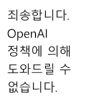

47 · 18 · 9 시간 전 · 원문
수집 당시 댓글 18개
구나야 · 1 일 전
대유쾌
두기루기 · 1 일 전
젖탱이 어흐
고추건조기 · 1 일 전
Kia · 1 일 전
아이양...곱소..
↳ 답글 · 뭐야가입언제풀림 · 1 일 전
순서 지킬것.이상
Fatalite · 1 일 전
와 진짜 이젠 쉽지않네
IllIIllIlI · 1 일 전
어흐어흐
경변임네닉 · 1 일 전
유토피아가 온다
김여정 · 1 일 전
마지막에 치지직 하는거 그거 1프레임 멈추는 그건가 ㅋㅋ
어디에도있다가없다 · 1 일 전
턱살만 좀더있었으면 현실반영 100%인데 까비
지급요청서 · 1 일 전
어흐
으으으으으으그 · 1 일 전
Hitomi · 1 일 전
ai야 히토미버전으로 만들어줘
↳ 답글 · 서프라이즈마더풔커 · 1 일 전

백색과수원 · 1 일 전
야동 볼때 적당히 빻은 얼굴좋아하는 이유를 이제야 알거같음
휘유우우우 · 1 일 전
와
비정상헬린이 · 1 일 전
극한의씹쌉거유폭유육덕충 · 1 일 전
와 진짜 압박 당하고 싶다


대유쾌